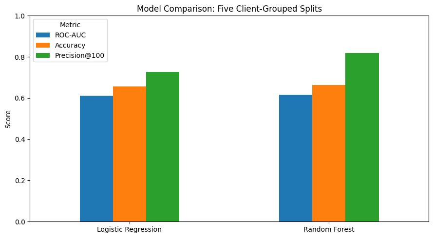
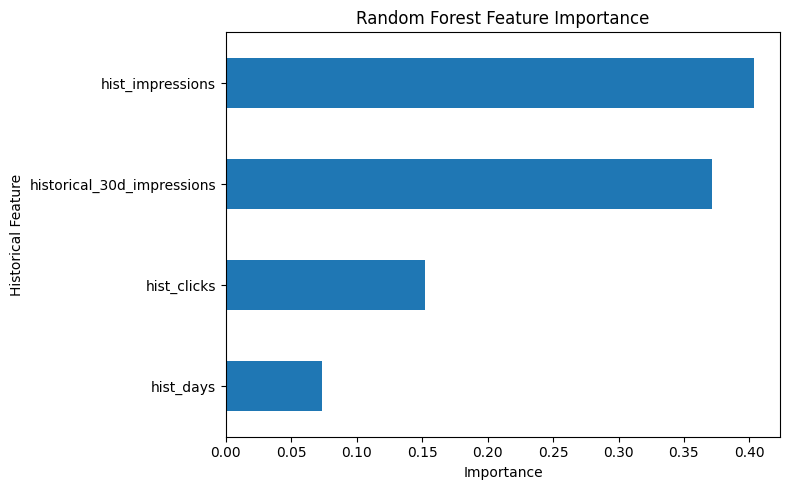

Abstract
Websites can contain thousands of pages, making it difficult to identify which declining pages deserve attention first. This project evaluates whether historical search-performance data can help prioritize content for human review.
The study compares Logistic Regression with a Random Forest classifier. It uses historical performance features to predict whether content will experience a substantial decline in normalized impressions during a later evaluation period. Evaluation is grouped by client to examine how the models perform on clients excluded from training.
Main finding
The Random Forest model performed better than the Logistic Regression baseline on mean ROC-AUC, accuracy, and Precision@100 in the reported evaluation. These results support further testing of a model-assisted review queue, not automatic content changes or claims of causal impact.
1. Problem
Content teams need a practical way to decide which pages to investigate when search performance declines. Reviewing every page manually can take time, especially when a website has a large content library.
This project investigates a narrow question:
Can historical search-performance data help rank content that later experiences a substantial decline in normalized impressions?
The intended use is decision support. A model can help surface pages for investigation, while a human reviewer checks the context before deciding what action, if any, is appropriate.
2. Data
The project uses the FlyRank internship warehouse dataset, which contains search and content-performance information. The reported analysis includes 91,033 eligible content items across 43 clients.
Historical performance from April and May 2026 is used to build features. June 2026 is used as the later outcome period.
Target definition
An item is labeled as declining when its June normalized 30-day impressions are below 80% of its historical normalized 30-day impressions. In other words, the target represents a decline of more than 20% relative to the historical reference.
Features
| Feature | Description |
|---|---|
hist_impressions |
Historical impressions. |
hist_clicks |
Historical clicks. |
hist_days |
Number of historical days represented. |
historical_30d_impressions |
Historical impressions normalized to a 30-day reference. |
3. Methodology
Models
Two classification models were compared:
- Logistic Regression: used as the baseline model.
-
Random Forest: trained with 200 trees and
random_state=42.
Validation strategy
The evaluation uses GroupShuffleSplit with five
splits, a 25% test size, and random_state=123.
Client ID is used as the grouping variable so that each
evaluation split holds out clients from the training data.
Each split held out 11 clients. Because the split strategy is repeated, test sets may overlap between runs. The reported metrics are mean values across the five splits.
Evaluation metrics
- ROC-AUC: measures how well the model ranks declining items above non-declining items across thresholds.
- Accuracy: measures the proportion of predictions that are correct at the selected classification threshold.
- Precision@100: measures the fraction of declining items among the 100 highest-ranked items.
4. Results
The following table reports the mean evaluation metrics across the five client-grouped splits.
| Metric | Logistic Regression | Random Forest |
|---|---|---|
| Mean ROC-AUC | 0.6112 | 0.6164 |
| Mean Accuracy | 0.6571 | 0.6642 |
| Mean Precision@100 | 0.7280 | 0.8200 |
Model comparison


Random Forest feature importance
| Feature | Importance |
|---|---|
hist_impressions |
0.4032 |
historical_30d_impressions |
0.3711 |
hist_clicks |
0.1520 |
hist_days |
0.0737 |
These importance scores describe how the fitted Random Forest used the features. They do not establish that a feature causes content to decline.
5. Interpretation & Limitations
What the results suggest
The Random Forest achieved a mean ROC-AUC of 0.6164, compared with 0.6112 for Logistic Regression. The difference in ROC-AUC is modest. The more notable difference in this evaluation is Precision@100: 0.8200 for Random Forest compared with 0.7280 for Logistic Regression.
If these results hold up under further validation, the Random Forest could be useful for creating a shortlist of pages for human review. The evaluation does not show that the model improves rankings, traffic, or business outcomes after recommendations are implemented.
Important limitations
- Limited predictive performance: the ROC-AUC values are only moderately above 0.5, so the model's ranking ability remains limited.
- Client generalization: grouped validation helps evaluate held-out clients, but five splits do not guarantee that performance will generalize to every client or future time period.
-
Overlapping test sets: repeated
GroupShuffleSplitruns may include some of the same clients in multiple test sets. The five results should not be treated as five fully independent experiments. - Potential target leakage: historical and outcome windows, including any overlapping source fields, should be audited carefully. A feature must only use information available at the time a real prediction would be made.
- Feature importance: importance values show how the trained model used the features; they do not prove causation.
- Operational validation: the study does not establish the effect of acting on the model's recommendations. A prospective test would be needed to measure that impact.
How to use the model responsibly
Treat the predictions as a review-prioritization signal, not as a final decision. Check the page's history, search intent, seasonality, technical status, and other available context before making changes.
6. Ranked Recommendations
Based on the current findings, the following actions are recommended for further development and evaluation.
Audit the time windows for leakage
Verify that every model feature is available before the prediction date and does not include information derived from the outcome period.
Test on a later time period
Evaluate the model on a future period that was not used for feature development, model selection, or tuning.
Review the highest-ranked pages
Use the model to prepare a shortlist for human investigation. Check whether the flagged pages have meaningful declines and whether the suggested review is useful.
Compare against simple baselines
Evaluate whether the model provides value beyond ranking pages by a simple historical-performance rule.
Run a prospective workflow test
After the model passes validation, compare a model-assisted review workflow with the existing process. Measure review efficiency and subsequent content outcomes before claiming business impact.
7. Reproducibility
The analysis uses Python and standard machine learning tools. The reported model settings include a 200-tree Random Forest, a fixed model random seed, and five client-grouped validation splits.
For reproducibility, the accompanying project repository should contain the notebook or scripts used to prepare the data, create the target, train both models, calculate the metrics, and generate the figures.
View the project repository on GitHub
Reported metrics should be considered verified only when they can be reproduced from the accompanying code and data.
8. Acknowledgments & Data Credit
This project was completed as part of the FlyRank Machine Learning Internship.
Thanks to FlyRank for the internship context and access to the search and content-performance dataset used in this study.
This is an educational research project. The findings are limited to the dataset, target definition, features, and evaluation strategy described on this page.